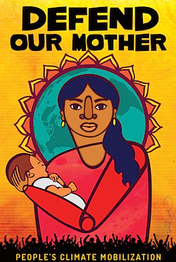
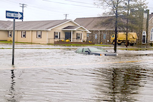

Friends,
We are less than two weeks away from the largest march on climate EVER!
On September 21, concerned citizens will take to the streets in New York City and cities around the world to stress the importance of environmental justice.
As world leaders gather at the UN on Sept. 23 for a climate summit, your presence on the 21st will apply the pressure needed to make sure something substantial comes out of this climate summit.
The People's Climate March could be a game-changer moment on climate change.
Faith leaders in NYC have a tremendous opportunity to bring a moral voice to our communities. And those in other locations have many ways to get involved.
Let's come together like never before to make it happen.
Get involved
While the People's Climate March is centered on the huge event planned for New York City, there are solidarity events happening around the country.
There are many ways you can get involved:
Raise awareness
- Deliver a sermon on earth stewardship, and promote the People's Climate March at prayer services and meetings within the next three weeks.
- Send outreach emails, including downloadable flyers to your members and networks.
- Post information about the climate march, and a link on your organization's website.
- Work with your youth groups to discuss topics of environmental stewardship, create artwork, poetry, slogans, and attend the march as part of their programs.
- Work with schools and their science departments to discuss environmental stewardship in the classroom, create projects, artwork, and attend the march as a field trip.
- Print out flyers and make available to members of your congregation, youth group or religious school students.
- Hold organizing meetings and discussions about environmental stewardship at your house of worship, school or organization.
Support those traveling to the New York march
Receive text alerts about the march
Text WE MARCH to 97779.
Endorse the march
The steps to endorse are simple -- sign up here. As an endorser of the march, you agree to spread word about the march to your faith community.
Need help with anything? Please let us know!
If you have any questions about this process, see the People's Climate March section on faith communities.
Why I'm marching in New York City
Sometime in the mid 1960's, the Wizard of Oz premiered on television in my childhood home.
It was a highly anticipated event that included permission to stay up past bedtime, hot buttered popcorn, and a rare moment when our mom and dad joined us in front of our family's black and white TV.
Then, as the perilous tale of a lost girl unfolded, my excitement turned into terror. I recall sucking my thumb with fervor from start to finish as Dorothy encountered danger after danger, all of which, it seemed to me, were the results of the most terrifying monster of all -- the tornado.
Had Dorothy's home not been ripped from its foundation and sucked into the black funnel, she would never have encountered those strange and wicked creatures; and, despite finding out that Oz had been a dream, I was sleepless with anxiety until my father promised me that tornadoes only happen in Kansas and never in New England where we lived.
Throughout my youth, and, I'm ashamed to admit, well into my adult years, I continued to find relief by believing that hurricanes, typhoons, cyclones, earthquakes, and severe weather catastrophes happened in the tropics or somewhere other than my home in the northeastern United States.
I heard the warnings from scientists and environmentalists that the thinning ozone layer and melting polar caps would be precarious for the entire planet; but, as long as tsunamis were elsewhere, I convinced myself that they were all Chicken Little hysterics fretting that "the sky was falling."
Until, Super Storm Sandy struck in 2012, and, just one year before, a huge Halloween blizzard devastated the northeast on the heels of Hurricane Irene, and an outbreak of tornadoes happened in New England.
I woke up. Natural disasters are not only occurring for other less fortunate folk over there somewhere. This is one world. And the storms are at all of our front doors.
That's why I'm marching with the staff of FOR and an estimated hundreds of thousands of people from all over the nation on September 21 in New York City.
When Hurricane Sandy hit in the New York tri-state area, FOR-USA was hosting our National Council in Nyack. People from around the country were stuck at our headquarters with area airports and other modes of transportation shut down. The power was out and we didn't have the necessary supplies to feed twenty people for a few more days to a week.
But our wonderful allies, the Stony Point Center, came to the rescue and -- in addition to providing refuge for those in the community who had lost their homes near the Hudson River in the storm surge -- they provided food for our stranded guests.
We are marching along side of our friends from Stony Point at the People's Climate March. Join us!
Interfaith engagement at the march with FOR
 The People's Climate March promises to be massive in scale, with unprecedented collaboration from over a thousand organizations -- the whole spectrum of the progressive movement for environmental, labor, peace, anti-nuclear, racial and economic justice will be there, along with a vast interfaith engagement. The People's Climate March promises to be massive in scale, with unprecedented collaboration from over a thousand organizations -- the whole spectrum of the progressive movement for environmental, labor, peace, anti-nuclear, racial and economic justice will be there, along with a vast interfaith engagement.
If you aren't able to march in New York City, but are there in spirit, how can we represent you? What would you like FOR's signs to say? Respond to this email and let me know.
Thank you, and may God bless you all!
Linda E. Kelly
Director of Communications
Fellowship of Reconciliation
P.S. Thanks to Sahar Alsahlani -- a part of the Stony Point Center's Community of Living Traditions, a member of FOR's National Council, and actively involved in local organizing for the march -- for assembling the ways people can get involved.
|